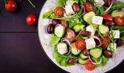
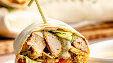
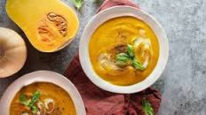

Bem-vindo ao Receitas Deliciosas
Explore uma coleção incrível de receitas saborosas, organizadas por categorias. Desde pratos principais irresistíveis a sobremesas incríveis, temos algo para todos os gostos. Descubra novas receitas e experimente sabores incríveis!
Receitas em Destaque

Salada Grega

Wrap Chipotle

Sopa de Abóbora
Pad Thai
Dicas Culinárias
- Escolha ingredientes frescos: Utilize sempre os melhores ingredientes para obter um sabor incrível.
- Tempere na medida certa: O equilíbrio entre temperos pode transformar qualquer prato.
- Use utensílios adequados: Uma boa faca e panelas de qualidade fazem toda a diferença.
- Experimente novos sabores: Não tenha medo de inovar e testar combinações inesperadas.